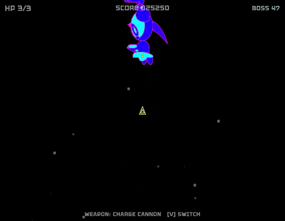

Stage · Final run
Outer Space
Outer Space is the final run, unlocked once you have cleared the four stages. It has three stages and then the Finale.
Unlocking it
Clear all four stages and Outer Space appears on the title screen. It is the final run: if you die there, you start that part again while you have lives.
The run
- Stage 1: Trap Circle Delta, a 9-segment ring with 120 HP.
- Stage 2, the boss rush: buffed versions of the old bosses, one after another. Fight 1 is Kangunroo Delta, fight 2 is Showman Delta, and the final fight is Plasmadrache Delta.
- Stage 3: the Delta Unit, 102 ships in 8 waves.
- The Finale: the Mothership in phase 1 (see Delta Unit), then the four force fields of the cool crystals in phases 2 to 5 (Control, Resistance, Matter and Power), and finally Delta himself.
